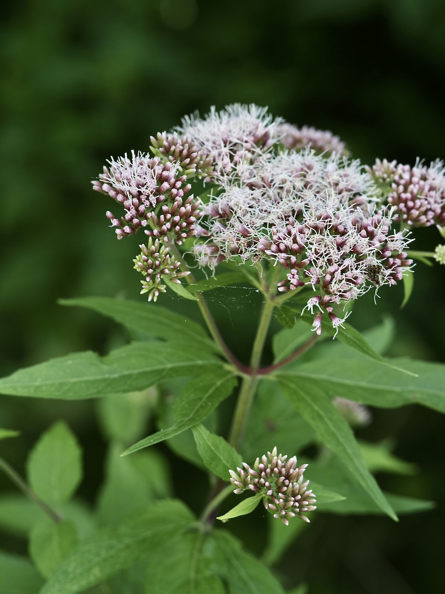

Schmetterlings-Highway am Bachufer — kein Dost, eine Verwandte.


Falscher Name, echte Verwandte
Der Name „Wasserdost" suggeriert eine Verwandtschaft mit Dost (Origanum) oder Thymian. Tatsächlich gehört Eupatorium aber zu den Korbblütlern und ist viel näher mit Aster und Goldrute verwandt. „Cannabinum" bezieht sich auf die hanfähnliche Form der gefiederten Blätter — daher auch der englische Name „hemp agrimony".
Eine Pflanze, ein Augustsommer
Im Spätsommer blüht der Wasserdost in dichten, flachen Schirmen aus winzigen rosa-weißen Korbblüten. Diese Form ist ein perfektes Landefeld für Schmetterlinge — und tatsächlich gehört sie zu den drei besten Nektarpflanzen für Tagfalter in unserer heimischen Flora. Wer an einem Bachufer im August einen blühenden Wasserdost findet, sieht oft fünf bis zehn Schmetterlingsarten gleichzeitig.
Wissenswertes & Merksätze
Erkennungszeichen
Kräftiger, oft rötlich überlaufener Stängel. Blätter gegenständig, drei- bis fünfteilig gefingert (hanfähnlich). Blütenstand schirmrispig, rosa-weiß.
Heilpflanze mit Risiko
Im Mittelalter als Wundheilmittel verwendet, daher „eupatorium" (von König Mithridates VI. Eupator). Heute: Wegen Pyrrolizidinalkaloiden (lebertoxisch) nicht mehr für die Selbstmedikation empfohlen.